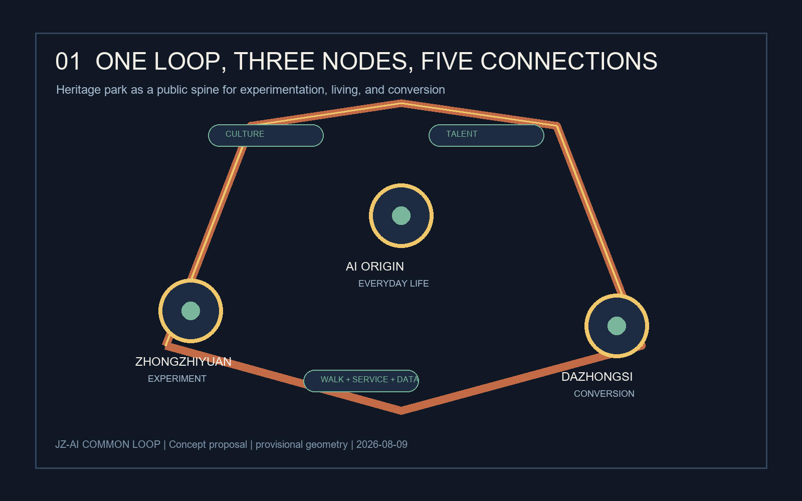
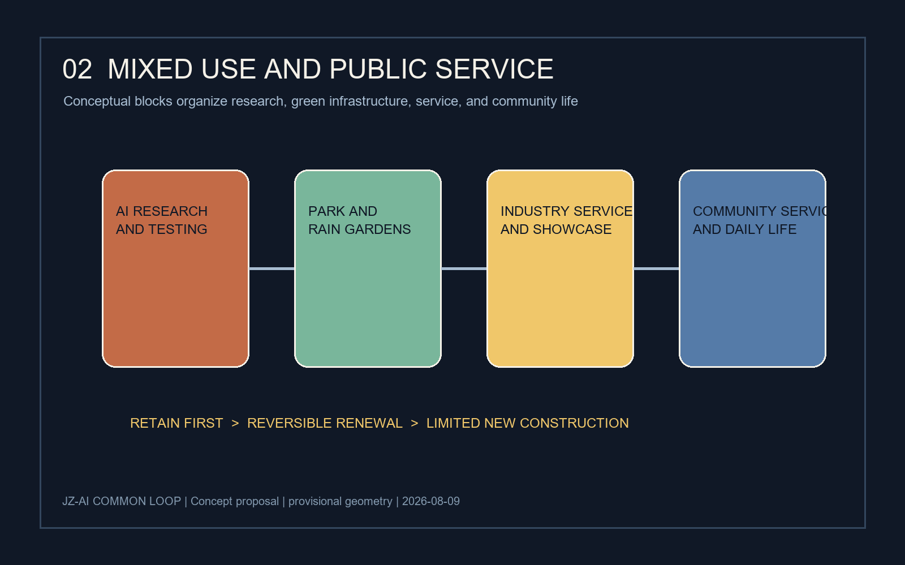
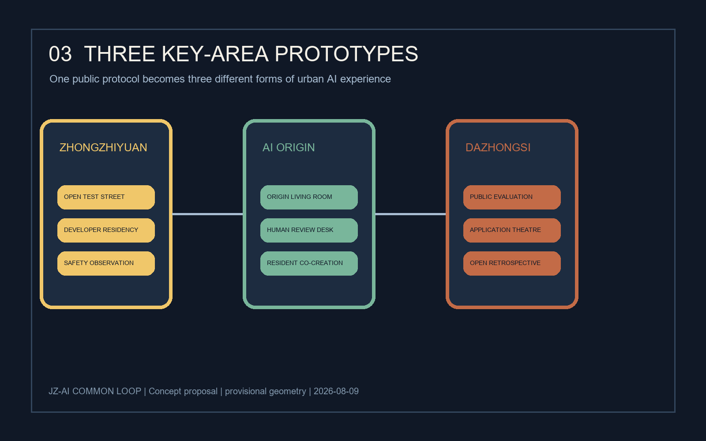
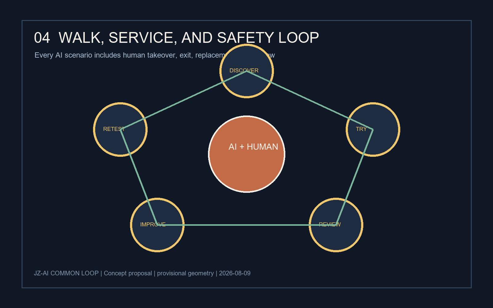
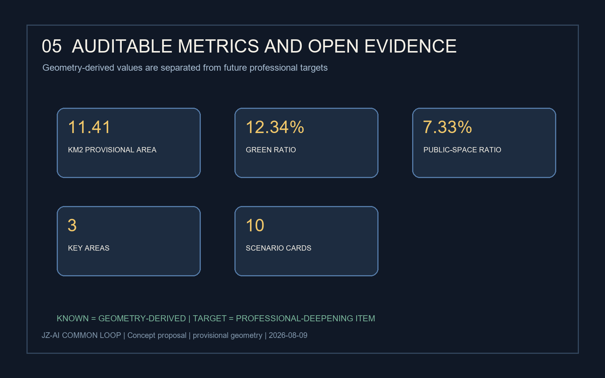

jingzhang-ai-coexistence-loop
--- title: "京张AI共生环：把创新变成可漫游、可测试、可持续的城市日常" author_github: "local-agent" language: "zh" proposal_format_version: "2" bilingual_contract_version: "1" translation_file: "proposal.en.md" license: "COMMUNITY-DISPLAY-ONLY" summary: "以京张遗址公园为公共骨架，以三处AI重点区为创新节点，构建可漫游、可测试、可持续运营的城市共生环。方案使用公开任务书与临时边界，仅作概念建议和专业深化输入。" tracks: ["ai-traffic-walkability", "enterprise-services-ecosystem", "civic-agent-governance"] scenarios: ["ai-traffic-walkability", "enterprise-service-copilot", "public-safety-operations-review", "ai-cultural-guide", "robot-delivery-low-speed"] ---
京张AI共生环：把创新变成可漫游、可测试、可持续的城市日常





设计依据与资料清单
本方案响应“百年京张AI创新带城市设计国际方案征集”的公开任务，采用“城市设计提案 + 可复核数据包 + 离线展陈页面”的形式提交。依据包括公开任务书与智能体任务书 来源 来源。场地包、资料登记表、允许设计空间和标准矩阵共同构成审计依据 来源 来源。
场地包目前提供的是临时研究边界和三处重点区域的 provisional geometry，未提供可作为法定红线的官方 polygon。所有面积、位置和图层均为概念研究依据；不代表控规、权属、工程、审批或政府实施结论 来源 来源 深度。
设计命题是：**让AI不只停留在楼里，而是成为可被看见、被体验、被监督、被持续改进的城市公共能力。** “共生环”由一条京张文化—慢行—数据观察廊道串联三处AI节点，形成“研发加速—日常生活—产业转化”的连续体验。
三层范围工作框架
- **统筹研究范围**：面向北五环、京藏高速、西直门外大街、万泉河路围合的约43.6平方公里，提出区域创新网络、人才流动和京津冀协同议题。方案不修改法定边界 空间数据。
- **总体设计范围**：面向京张遗址公园周边约1—2公里、约11.4平方公里的城市更新研究范围，建立“一带、三点、五条连接”的空间结构 指标。
- **重点区域**：把众智园AI自主创新加速区、北京AI原点社区、大钟寺AI产业集聚区作为三种城市原型，分别对应“实验、生活、转化” 空间数据 指标。
总体结构不是新的工程红线，而是可供专业团队深化研究的空间工作框架：一条主环、三处节点、五类连接（慢行、公共服务、数据、产业、文化）。
统筹研究范围产业与未来城市研究
一带总体概念与功能统筹
品牌名为 **JZ-AI COMMON LOOP / 京张AI共生环**。视觉方向采用“铁轨双线 + 开源节点”的符号：两条连续线代表百年京张与未来数据流，三枚圆点代表三处重点区，断点表示允许公众参与和纠错。主色为铁锈红、智慧金、夜行蓝和公园绿，适用于导视、活动、数字界面和公共设施识别。
区域功能分为五层：①AI研发与验证；②企业服务与转化；③社区生活与公共照护；④文化展示与国际交流；⑤公共治理与安全复核。功能不按“园区—社区”二分，而按全天候共享的城市服务链组织 [task:agent.1] 标准。
产业与未来城市研究
提出“算力—数据—人才—场景—治理”五要素循环：众智园承接早期试验和开发者共创；AI原点社区承接生活服务和低门槛体验；大钟寺承接企业服务、产品展示和产业转化。三点通过开放场景协议、公共问题清单、人才短住和测试券互相导流 [task:agent.2]。
产业案例采用“模式启发而非事实类比”的方法，优先研究开放街区、城市实验室、公共数字基础设施、文化遗产活化和开发者社区等公开案例；案例进入深化阶段前需要补充版权、数据和运营主体核验，不将其当作本地已落地事实 来源。
总体设计范围城市更新与控规深度城市设计
空间结构
- **一条共生主环**：沿京张遗址公园形成连续的慢行与公共服务叙事线，串联入口、展陈、社区、产业和夜间活动节点。
- **三处AI节点**：北部“共创加速器”、中部“AI原点客厅”、南部“产业转化站”。每处节点设置可见的测试界面、公共休息和人工复核点。
- **五类连接**：文化连接、步行连接、服务连接、数据连接和人才连接。道路和轨道线位不在本方案中作工程判断 来源。
更新原则
优先保留可继续使用的建筑与成熟社区，先做低成本公共空间、导视、照明、可逆家具和活动运营；对需要改造的建筑提出“轻介入、可拆换、可回收”的概念模块；不提出具体地块拆改留、容积率、建筑高度或土地权属结论 空间数据 深度。
重点区域详细设计
1. 众智园AI自主创新加速区：实验可见
设置“开放测试街”作为一条可步行的实验界面：白天展示机器人、无障碍导航、环境感知和低速配送等可公开场景，夜间转换为开发者讲解与小型发布。空间采用可移动展台、可读数据牌和人工安全岗，所有测试默认脱敏、限速、可退出 [task:agent.2] [task:agent.3]。
2. 北京AI原点社区：生活可用
设置“原点客厅”作为社区公共服务枢纽，集合问路、办事导航、健康服务转介、儿童学习、老年人数字辅导和邻里活动。每个AI服务都保留人工窗口、纸质替代路径和无障碍交互，居民可查看数据用途并撤回授权 [task:agent.3] [task:agent.5]。
3. 大钟寺AI产业集聚区：转化可见
设置“产业公开评测廊”与“应用剧场”：企业可用公共问题清单展示产品，专业机构可进行可解释性、隐私、可达性和社会影响的分级评测。公共空间不承担商业背书，所有展示标注“测试中/已复核/待改进”状态 [task:agent.4]。三处节点均以临时重点区几何作为讨论锚点，需由专业团队重新核验实际落位 来源 空间数据。
AI 创新生态、人才画像与 AI+ 场景
生态案例与产业空间映射
建议建立八类可持续案例库：开放街区实验室、遗产公园夜间文化、城市数据信托、无障碍导航、低速机器人配送、开发者驻留、社区照护协作、公共算法审计。它们被映射到“研发—生活—转化”三点，不代表本地现状或已签约主体 [task:agent.2]。案例库的空间映射应回到三处重点区和公开任务边界复核 来源 空间数据。
五类用户画像
| 用户 | 需求 | 共生环回应 |
|---|---|---|
| 开发者 | 找到真实问题与低门槛测试场 | 测试券、开放问题库、夜间共创 |
| 社区居民 | 安全、可理解、可退出的服务 | 原点客厅、人工复核、纸质备选 |
| 老年人与儿童 | 少屏幕、强陪伴、无障碍 | 声音导视、亲子任务、志愿辅导 |
| 企业与投资人 | 验证产品价值与社会影响 | 产业公开评测廊、转化剧场 |
| 城市管理者 | 看到风险、反馈与改进证据 | 公共看板、事件复盘、分级授权 |
十张AI场景卡
1. **京张文化导览**：语音讲述百年铁路与中关村创新史，支持多语种、低视力模式和人工纠错 [task:agent.5]。 2. **无障碍慢行导航**：根据坡度、施工和拥挤度推荐路线，默认不采集人脸数据。 3. **社区办事副驾驶**：把政策语言转成可理解步骤，关键判断转人工窗口。 4. **老年数字陪练**：在原点客厅由志愿者带领完成一次真实服务操作。 5. **儿童AI安全实验**：通过实体卡片和可视化传感器学习隐私、偏差与安全。 6. **低速配送试验**：限定时段、速度和路权，在人工观察下验证配送服务 [task:agent.3]。 7. **公共空间热舒适提示**：用公开环境数据提示遮荫、休息和饮水位置。 8. **夜间活动编排**：根据活动类型和人流反馈调整灯光、座椅和志愿者点位。 9. **企业问题撮合**：把公共问题清单与企业能力匹配，结果必须公开方法与局限。 10. **安全事件复盘**：对异常事件做脱敏分析，形成“发生—响应—改进”的公共记录 [task:agent.3] [task:agent.6]。
三个测试验证场景
- **T1 漫游测试**：验证不同年龄、视听能力和语言背景的人能否完成“车站—公园—原点客厅”连续路线。
- **T2 服务测试**：验证居民能否在AI建议与人工复核之间自由切换，并理解数据用途。
- **T3 安全测试**：验证低速机器人、夜间活动和公共看板在异常情况下是否具备停机、人工接管和事后复盘能力。
用地、建筑规模与拆改留方案
本包把 LAND_USE 和建筑图层作为空间概念层，不作为法定控规。建议将研发、服务、社区和绿地组织成混合街区，首层优先公共、可达、可转换的功能。建筑策略采用“保留优先—可逆更新—小量新建”的顺序，任何实际拆改留、容积率、建筑高度、消防和结构判断必须由有资质专业团队依据官方资料复核 来源 空间数据 空间数据。
本节通过图层表达功能混合与公共界面，而不对任何具体地块作法定用地判断。研发、服务、社区和绿地之间的关系以首层开放性、步行可达性、可拆装构件和全天候服务为优先；这使场景测试可以从少量公共家具、导视和活动开始，而非以大规模建设为前提。
建筑基底数值只用于复核 submitted geometry 的完整性，不能反推容积率、开发强度或最终建设规模 指标。实际拆改留需要叠加官方边界、现状建筑质量、文保条件、消防疏散、交通组织、市政容量、产权和社区协商等资料，由有资质团队另行判断 来源 空间数据。在这些缺口补齐前，本节仅提供保留优先、可逆更新和小量新建的概念策略，以降低试错成本并保留后续调整余地。
交通、轨道、市政与公共服务设施
交通策略聚焦体验与管理接口，不提出具体道路红线、轨道线位或管线工程方案。以既有公共交通接驳和步行优先为前提，沿主环设置连续遮荫、夜间照明、坐凳、饮水、厕所、无障碍导视和人工求助点；在三处节点之间设置“15分钟服务链”，把技术测试转译成可步行的公共服务 空间数据 深度。
公共设施采用“可感知、可关闭、可替代”三项原则：每个AI终端显示运行状态和责任主体；异常时可以物理关闭；服务失败时提供人工、纸质或电话替代路径。市政容量、能源负荷和地下空间可行性均列为待核验事项 来源。
蓝绿空间、公共空间与城市风貌
蓝绿系统以遗址公园为连续公共骨架，以“树荫口袋—雨水花园—共享草坪—夜间小广场”构成可停留的颗粒化网络。建议把环境数据转换成不暴露个人信息的公共提示，例如热舒适、噪声时段和雨后积水风险；绿地与公共空间比例沿用当前 provisional geometry 复算结果，分别为 指标 与 指标，替换官方边界后必须重算。
风貌不复制铁路符号，而采用“耐久材料 + 可拆组件 + 数据纹理”的当代表达：锈红色作为文化线索，智慧金用于交互节点，夜行蓝用于安全与夜间导视，公园绿用于生态设施。所有字体、图标和图形均使用本地原创或可清权素材 来源。
更新项目清单、实施政策与分期计划
| 编号 | 概念项目 | 位置原型 | 近期动作 | 责任协作 |
|---|---|---|---|---|
| P1 | 京张共生主环 | 公园边界与入口 | 导视、遮荫、座椅、人工服务点试点 | 公共空间+社区 |
| P2 | 共创加速器 | 众智园 | 测试券、开放问题库、开发者驻留 | 园区+高校 |
| P3 | AI原点客厅 | 原点社区 | 人工复核台、居民培训、亲子实验 | 社区+志愿者 |
| P4 | 产业公开评测廊 | 大钟寺 | 产品展示、可解释性评测、问题复盘 | 企业+专业机构 |
| P5 | 朝圣地标三件套 | 三处节点 | 地标装置、夜间活动、国际传播 | 运营联合体 |
分三阶段推进：**0—6个月**做低成本、可撤回的公共空间与服务原型；**6—18个月**开展三处节点的场景测试和数据治理复盘；**18个月以后**根据评估结果由专业团队深化城市设计、建筑、工程和运营方案。各阶段都设置“公众反馈—人工复核—公开修订—再测试”的闭环 [task:agent.6] 空间数据。
指标体系、面积复算与合规矩阵
当前包可复核指标包括：临时总体设计范围面积约11,412,825平方米 指标；设计建筑基底合计约310,807平方米 指标。这两项来自 submitted geometry 的面积复算。
绿地比例约12.34% 指标；公共空间比例约7.33% 指标；重点区域数量为3 指标。这三项用于比较空间结构，不是法定控制指标。
建议进入专业深化的目标性指标（不作为本包已知事实）：主环连续可达率、人工替代服务覆盖率、场景测试停机响应时间、公众反馈闭环率、夜间活动安全复盘完成率。每项指标需在官方边界、现状调查、运营主体和工程条件明确后确定基线、口径与责任人。
合规矩阵与标准矩阵记录任务响应和专业依据 标准 标准。设计深度矩阵记录图层、指标证据和待核验事项 深度 深度。
风险、版权与合规说明
- **边界风险**：当前使用 provisional geometry；不得用于红线、审批、权属或工程判断 来源。
- **隐私风险**：默认不采集人脸和精细轨迹；涉及数据的场景必须最小化、脱敏、告知、可撤回，并保留人工替代 [task:agent.3]。
- **安全风险**：机器人、夜间活动和公共设施设置限速、停机、人工接管和事件复盘机制。
- **公平风险**：优先支持老人、儿童、残障人士、低带宽用户和不使用智能手机的人群。
- **版权风险**：图纸、图标、文字和代码由本地生成；未使用未授权商业地图瓦片、人物肖像、商标或第三方图片 来源。
- **表达边界**：本方案全部空间落地建议均为概念建议、参考方案或可供专业团队深化研究，不构成政府审定结论 来源。
参考资料
brief/site-package/design_brief.json：项目范围、定位和任务入口 来源。brief/site-package/agent_taskbook.json：智能体任务、输出和边界条款 来源。brief/site-package/allowed_design_space.json：可编辑/锁定图层与公开数据规则 来源。data/source_registry.json：来源、清权状态和用途边界 来源。brief/site-package/geometry/provisional_boundaries.geojson：当前临时研究边界依据 来源 来源。standard_matrix.json、design_depth_matrix.json、compliance_matrix.json：本包的结构化审计证据。
> 状态声明：本提交包由AI agent生成，当前可供公开讨论、自检和专业评审；因官方边界和部分现状数据尚待补齐，不能替代正式规划、工程设计、审批文件或政府实施安排。